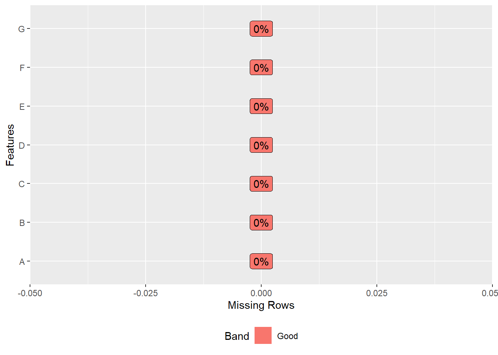

```{r}
# Write your code here
```11 📘 Manipulate data
11.1 Introduction
Important
Remember that with Quarto you can store multiple data sets in memory (stored in different data frames df1, df2, df3, etc) and work in parallel on all these data sets.
11.2 Type of data
11.3 Descriptive statistics
11.4 Visualise data
11.5 Manipulate Python and R data
- Import dataset1.xlsx using Stata and store it in
df1
- Import dataset1.csv using Python and store it in
df2
```{python}
# Write your code here
```- Compare
df1anddf2. Can you indicate what variable has been modified in dataset1 between df1 and df2?
Tip
Use the R function comparedf
```{r}
# Write your code here
```- Import dataset1.xlsx using Stata and store it in
df1
```{r}
library(RStata)
df1 <- RStata::stata("import excel ./data/dataset1a.xlsx",
data.out = TRUE)
```. import excel ./data/dataset1a.xlsx
(7 vars, 10,309 obs)- Import dataset1.csv using Python and store it in
df2
```{python}
import pandas as pd
df2 = pd.read_csv('./data/dataset1b.csv')
```- Compare
df1anddf2.
```{r}
library(reticulate)
```Warning: Paket 'reticulate' wurde unter R Version 4.1.3 erstellt```{r}
arsenal::comparedf(df1, py$df2)
```Compare Object
Function Call:
arsenal::comparedf(x = df1, y = py$df2)
Shared: 0 non-by variables and 10308 observations.
Not shared: 14 variables and 1 observations.
Differences found in 0/0 variables compared.
0 variables compared have non-identical attributes.11.6 Explore data
Package dplyr
Pipes are a powerful tool for clearly expressing a sequence of multiple operations. So far, you’ve been using them without knowing how they work, or what the alternatives are. Now, in this chapter, it’s time to explore the pipe in more detail. You’ll learn the alternatives to the pipe, when you shouldn’t use the pipe, and some useful related tools.
11.7 Descriptive summaries
Packages skimrand gtsummary
```{r}
install.packages("skimr")
``````{r}
install.packages("gtsummary")
```11.8 Plot
Package ggplot2
```{r}
install.packages("ggplot2")
```11.9 Explore data
Package DataExplorer
```{r}
install.packages("DataExplorer")
```DataExplorer::plot_missing(df1)